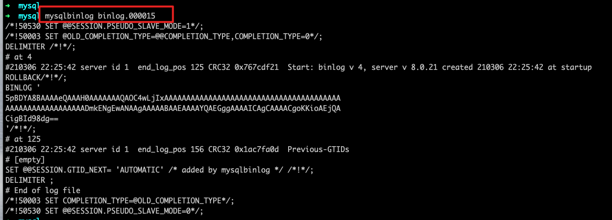

Binlog是什么
二进制日志，用于记录数据库的写入性操作信息，以二进制的方式保存在磁盘。是Mysql的逻辑日志，并且由Server层进行记录，与存储引擎无关。
Binlog的使用场景
主从复制：在Master端开启binlog，然后将binlog日志发送到各个Slave端，由Slave端重放Binlog最终达到主从一致
数据恢复：通过使用mysqlbinlog工具来恢复数据
Binlog日志格式
show variables like 'binlog_format' //查看binlog日志格式
statement
语句模式 – 基于sql语句的复制，每一条会修改数据的sql语句会记录到binlog里
优点：不需要记录每行的变化，减少了Binlog日志量，节约了IO，提高性能
缺点：由于记录的只是执行语句，为了这些语句能在Slave上正确运行， 因此还必须记录每条语句在执行的时候的一些相关信息，以保证所有语句在Slave得到和在Master端执行时候相同的结果。另外Mysql的复制，像一些特定函数功能，Slave可与Master保持一致会有很多相关问题。
row
行模式 – 基于行的复制，不记录sql语句的上下文，只记录哪条记录被修改
优点：不会出现某些特定情况下的存储过程，或function，以及trigger的调用和触发无法被正确复制的问题
缺点：需要记录每行记录的修改，可能会产生大量的日志内容
注：新版本的MySQL对row模式做了优化，并不是所有的修改都会以row来记录，比如遇到表结构变更的时候会以statement模式来记录，如果遇到update或者delete等修改语句，还是会记录所有行的变更
mixed
混合模式 官方文档
5.1.8版本开始，提供mixed格式，即statement与row的混合模式，在一些特定环境下会自动切换。比如，以下情况mixed会转换成row模式
1
2
3
4
5
6当 DML 语句更新一个 NDB 表时；
当函数中包含 UUID() 时；
2 个及以上包含 AUTO_INCREMENT 字段的表被更新时；
执行 INSERT DELAYED 语句时；
用 UDF 时；
视图中必须要求运用 row 时，例如建立视图时使用了 UUID() 函数；
Binlog刷盘时机
sync_binlog参数 — 同步binlog，持久化到硬盘，取值0，1，N
1
2
30: 不去强制要求，由系统判断刷盘时机
1: 每次commit的时候将binlog写入磁盘
N: 每N个事务才会将Binlog写入磁盘
show variables like 'sync_binlog'; //查看参数设置
set global sync_binlog=0; //设置sync_binlog参数值
Binlog其他相关语句
show variables like 'log_bin'; //查看是否开启binlog日志
show variables like 'binlog_format'; //查看binlog日志格式
show global variables like '%log%'; //查看binlog所在目录
show binary logs; //查看当前服务器使用的binlog文件及大小
show binlog events in 'binlog.000017'; //查看具体一个binlog文件的内容
mysqlbinlog命令的使用及说明
其命令可以使binlog日志以文本的方式显示，如下图

图片中日志的说明如下：
1
2
3
4
5
6
7
8position：位于文件中的位置，说明该事件记录从文件第210306个字节开始 //#210306
timestamp：事件发生的时间戳 //22:25:42
server id：服务器标识
end_log_pos：表示下一个事件开始的位置
thread_id：执行该事件的线程ID
exec_time：时间执行花费的时间
error_code：错误码，0意味着没有发生错误
type：事件类型Query